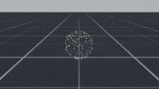
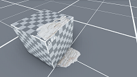
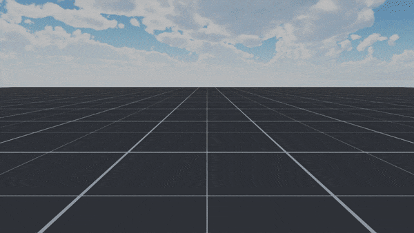
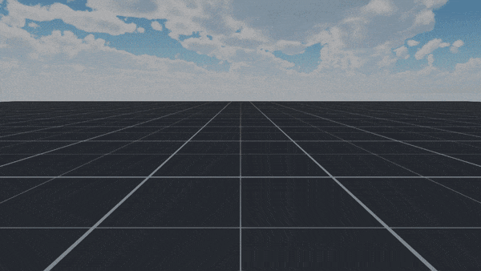
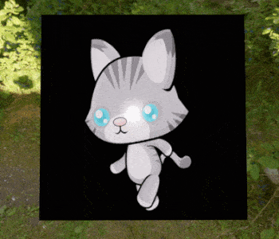
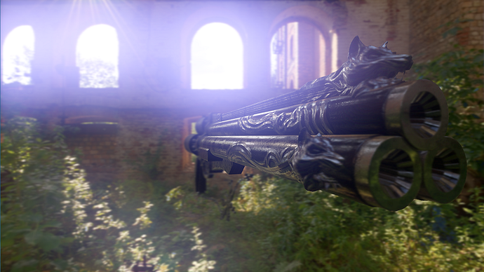

Release date: 14.1.2019
Version 1.1 Release


Major features
Particle system
The biggest feature added in this update was the introduction of the brand new particle system. The goal was to provide an extensive system that can match the capabilities of particle systems provided by commercial engines. Some highlights of the system are:
Dual simulation backend
The entire particle system has been developed to support two completely separate simulation backends
- CPU simulation - Provides more traditional particle effects with a large number of behaviours, as well as a simple way to set up your own behaviours.
- GPU simulation - Capable of simulating hundreds of thousands of particles by running the simulation completely on the GPU.
High performance
All particle emission and simulation is fully multi-threaded, meaning that even without relying on GPU simulation you can run a large number of particle systems at once. But if that still isn't enough you can always use the GPU simulation for extreme particle counts.
Complex emission options
Emitters determine where your particles initially spawn, along with other properties such as velocity and color. A wide range of primitive emitters is provided, including box, sphere, cone, circle, line, rectangle and others. Every primitive emitter can additionally be customized with properties such as volume thickness, emission arcs and more.
Emission via bursts
Mesh emitters
Additionally emission from completely arbitrary shapes is provided through mesh emitters. Mesh emitted particles can spawn on user-provided mesh, as well as inherit mesh properties such as normals. This allows you to create complex effects in 3D modeling programs and use within bsf. Your meshes can also be animated, as particle emission is supported from skinned meshes!
Distribution
Majority of particle system properties are specified as distributions, including properties such as color, size, velocity and most others. Distribution properties can be defined as a constant, randomly selected range, time varying curve or even a time varying random range. This system provides a simple, unified API that gives the user a lot of customization options.
// Randomly vary the color of a particle between red and blue
emitter->setInitialColor(ColorDistribution(
Color(1.0f, 0.0f, 0.0f, 1.0f),
Color(0.0f, 1.0f, 0.0f, 1.0f)
));
// Specify a time-varying curve that makes new particles bigger with time
emitter->setInitialSize(FloatDistribution(TAnimationCurve<float>(
{
TKeyframe<float>{0.1f, 0.0f, 1.0f, 0.0f}, // Start at 0.1 size
TKeyframe<float>{0.4f, 1.0f, 0.0f, 1.0f}, // And grow up to 0.4 size
})));
Extremely customizable
A wide range of built-in behaviours is provided for both CPU and GPU simulations, but most importantly it is easy to add your own completely custom behaviours. The system was designed to be easy to extend, whether you need to add custom emitter shapes or properties, particle behaviours or even extend the GPU simulation shaders.
Mix of behaviours to create a traditional smoke effect
Vector fields
Vector fields allow you to create extremely complex particle movement patterns by setting up a 3D grid of vectors that controls particle velocity and/or force. They can be created using tools such as Maya Fluids for fluid simulation, or specialized particle system vector field tools such as VectorayGen.
Vector field simulation
Collisions
The system supports collisions of particles with the rest of the scene, allowing you to create realistic effects. The system supports three separate collision modes:
- Planes - Define a custom set of planes to collide against. Restrictive but very performant, and in many cases perfectly adequate.
- World - Particles will collide with all physical objects. Provides accurate physical collisions with the scene.
- Depth buffer - Approximate collision mode for GPU simulation, able to handle extreme particle counts.

3D particles with collisions
And more
- Emission bursts
- Sprite sheet texture animation
- 3D particles
- Particle sorting
- Soft particle rendering
- Lit and unlit particles
- Custom particle shader support
Learn how to use this system through the brand new particle system manual or the particle system example project.
Material animation
Material with sprite sheet animation
Materials now support animated values such as animation curves, color gradients or sprite textures. These values can be assigned pretty much the same as their constant versions:
- float shader properties can be assigned an animation curve
- Color shader properties can be assigned a color gradient
- Texture shader properties can be assigned an animated sprite texture
This provides a unified approach to handling material animation across all engine systems, including normal rendering, particle system, decals and GUI. It doesn't require any additional logic from the user to perform the animation, just to set up the necessary curve, gradient or a texture. The system then takes care of animating the property in a performance efficient way.
// Create a sprite texture with sprite sheet animation
SpriteSheetGridAnimation anim;
anim.numColumns = 3;
anim.numRows = 3;
anim.count = 8;
anim.fps = 8;
HSpriteTexture spriteTexture = ...;
spriteTexture->setAnimation(anim);
spriteTexture->setAnimationPlayback(SpriteAnimationPlayback::Loop);
// And assign it to the material property
HMaterial material = ...;
material->setSpriteTexture("gAlbedoTex", spriteTexture);
Read more about it in the updated materials manual.
Bloom
Bloom effect with a blue tint
Bloom highlights bright areas of the scene simulating a real world camera effect where the light overwhelms the camera lens. It works best with bright lights or emissive materials.
HCamera camera = ...;
auto rs = camera->getRenderSettings();
rs->bloom.enabled = true; // Enables/disables the effect
rs->bloom.threshold = 1.0f; // Determines how bright something needs to be to be effected
rs->bloom.intensity = 1.0f; // As the name implies
rs->bloom.quality = 2; // In range [0, 3]. Higher number means nicer bloom but higher performance cost
rs->bloom.tint = Color(0.9f, 0.8f, 0.1f); // Color tint to apply to the effected areas
camera->setRenderSettings(rs);
Emissive materials

Emissive material applied to a particle system
All standard materials that support lighting can now have parts of their surfaces defined as emissive through an emissive mask texture and an emissive color and intensity. Emission is useful for surfaces representing light emitters (screens, monitors, neon lights, etc.), it interacts nicely with effects such as bloom, and can be even be used for indirect lighting through the use of light probes.
HShader shader = gBuiltinResources().getBuiltinShader(BuiltinShader::Standard);
HMaterial material = Material::create(shader);
...
// Mark entire surface as emissive
material->setTexture("gEmissiveMaskTex", gBuiltinResources().getTexture(BuiltinTexture::White));
// Make the color a bright red
material->setColor("gEmissiveColor", Color::Red* 10.0f);
Decals
Decal projected onto a surface
Decals are used for projecting textures onto other surfaces, either for dynamic gameplay purposes (i.e. bullet holes, explosion marks) or for level design for adding more details to surfaces without having to create new textures.
Decals support multiple modes:
- Transparent - This is the default mode where a full complement of PBR textures is provided and blended with the underlying surface.
- Stain - Similar to Transparent except the albedo color is multiplied (modulated) with the underlying albedo. This makes it for suitable for stain-like decals that modify the existing color, rather than replace it.
- Normal - Only the normal map is projected. This allows the decal to be used for effects such a footsteps in the snow.
- Emissive - Only the emissive texture is projected. Useful for making surfaces appear as emitting light.
Decals can also be selectively applied to only certain surfaces by setting rendering layers.
Read more about decals in the decal manual.
Minor features
- GUISkin now has a JSON format and no longer needs to be hardcoded
- GUI now supports keyboard navigation, customizable through
GUINavGroup - Added bitwise operations for linearly interpolating between integers directly
- Added optimized floor/ceil/round operations when converting from float to integer
- Added a
Randomclass with a variety of utility methods for generating random numbers - Added a per-camera option to disable skybox rendering
- Updated Vulkan render backend to 1.1.85
- Added Cotire support for unity builds and precompiled headers
- Build system now uses more traditional CMake build configurations, to make it easier to use as a submodule
- Added new cylinder primitive mesh
- Non-async import methods are now thread safe, usable for import from user-managed threads
Resources::saveis now thread safe, usable for async resource saving- Pool allocator can now be thread safe (optional via a policy)
- Added support for global per-type pool allocators
- Added
AnimationCurvespecialization for integer values CoreObjectdependencies have a lot more control on how are they marked as dirty, resulting in less full rebuilds and more efficient updatesTaskGroupsupport forTaskScheduleras an easier way to process a set of data across multiple threads- Added move operations to resource and game object handles
- Added profiling coverage to the entire renderer
- GPU profiler now supports hierarchical sampling
- Profiler overlay now built-in and usable through
Application - Added methods that allow evaluation of integrated and doubly integrated animation curves
- Added methods for calculating range of integrated animation curves
- Major RTTI system overhaul for better performance and significantly better design
BS_PARAMScan be used on method parameters to export aVectoras a variable parameter entry in the script code- Added a
Bitfieldcontainer - Vertex/Index buffers can now be bound as generic load-store buffers so they can be populated from the GPU
- Added a
NO_RREFattribute to allow resource references to be exported as direct resource references rather thanRRefhandles in script code - Core sync system overhaul that allows sync methods to be built with significantly less boilerplate
- GUI elements can now report screen space bounds
- Added a general purpose GPU parallel radix sort algorithm
- Added an utility to calculate a range of a set of animation curves
- Added an overridable
fixedUpdatetoApplicationfor user customized fixed updates outside of components - Significantly cleaner design and better performance for
BinarySerializer - Game object serialization can now be safely done from multiple threads, allowing async scene loading/saving
- Materials variations can now be toggled by the user through
Material::setVariation - Many improvements to the script binding generator that make it more expressive and able to handle more complex C++ code for export
- BSL importer now allows selection of render backends to generate shader code for
- Added a separate built-in asset import tool and removed asset import from application start-up
- Added build scripts for automatic versioning of data packages hosted outside of Git
- Added a
SmallVectorcontainer, serving as a dynamic array that can avoid most dynamic allocations - Added a
DynArraycontainer, a potential replacement forstd::vector - Added a dynamic cast
rtti_castmethod - Use modern CMake per-target compile/link properties instead of the old-school global ones
- Added complex number support in math library
- Added sRGB <-> linear color space conversion methods
MinHeapclass for use as a priority queue in geometric algorithmsAnimationUtilitynow supports split & combine functionality on arbitrary animation curve types- Major refactor of Vulkan image layout transitions, memory and execution barriers to make them more correct, easier to follow and more performant
- Added Romberg integration and Gaussian quadrature methods to the math library
- CI deployment moved to S3
- Documentation is now auto-generated from latest version
- Added multiple documentation versions and a version selector
- Various improvements to the logging system and HTML generation
Bugfixes
- Don't attempt to install .pdb files if running in a GNU environment on Windows
- GUI elements without
ClickThroughflags will no longer incorrectly pass pointer events to elements below them - Dependency binaries will no longer get installed to the parent project folder instead of bsf folder
- Fixed a memory leak within
StringID - Fixed a memory leak in macOS display enumeration
- Fixed macOS crash when enumerating displays and video modes on certain hardware configurations
- Fixed signal trapping on macOS and Linux
- Scanning for references using RTTI no longer ignores base class members
- Tweaked radial light shadow bias to reduce shadow acne in some scenes
- Fix for shadowed radial lights applying their lighting twice if viewing them from outside their bounds
- Properly construct
Collidertransform for colliders with local offset - Debug draw now renders text in screen space
DrawHelpernow properly applies local offset when drawing text- Fix for draw helper incorrectly rendering text if there were multiple text entries in the same batch
- Disallow use of the FBX importer on multiple threads at once - The FBX SDK library has been proven not to be thread safe
- When enabling animation preview mode, don't rebuild the animation if already enabled, as its causing issue with animation scrubbing in the editor
- Animating a single scene object transform component no longer resets the other components to identity
- When loading resources properly notify listeners in all cases
- Unlocking FPS now works as intended
- Update fixed update time with each iteration instead of once per frame, to resolve issues with custom physics callbacks
- Added
glMemoryBarrier()after draw/compute calls on OpenGL to ensure all written data is visible by future calls - When sampling a single frame of animation don't apply scene-object updates every frame to allow the user to move the object during scrubbing in editor
- Deserializing
MaterialParamsstored in an older format now works properly - Properly exit 'sampling' animation mode when starting an animation through
Animation::setState - Indirect diffuse is no longer incorrectly applied to metallic materials
- Game object and resource handles can no longer be arbitrarily cast to one another
- Components creating other components or otherwise modifying component state during component callbacks will no longer invalidate
SceneManagerlists - Fix memory leak in the GPU profiler
- Spot light bounds are now calculated properly
- DirectX was leaking
GpuBufferobjects - Greatly improved performance when rendering with MSAA
- Fixing OpenGL crash due to nested occlusion queries
- Fix for Vulkan not binding the entire texture array unless number of array slices was explicitly specified
- Fixed a crash when doing a raycast query on an individual
Collider - Frame allocator can now handle being passed a null pointer for deletion
- Fixing memory corruption when writing to Vulkan host-mapped images
- Vulkan query results are now properly retrieved
- Fixed
SceneManagercrash when attempting to change state on a game object that was destroyed with the 'immediate' flag - Fixed incorrect image scaling with sprites
- Normal unpacking methods fixed
- Modal windows will now properly receive a focus event
Input::onPointerMovedpointer delta is now properly assigned- Issue a memory barrier if vertex/index buffer has been written to by a shader on Vulkan
- GPU buffers with a 16-bit unsigned integer format now report proper element size
MeshDataiterators now properly report when they reach the end- Fixing a crash due to Vulkan framebuffer getting a delayed update on Linux
- When creating a Vulkan swap chain make sure to account for that fact that swap chain might not be the one originally requested
- Destoying Vulkan buffer views will now properly wait until the buffer is done being used on the GPU
- Fix divide by zero issue in certain audio system components
- Fix a memory leak in FMOD audio plugin
- GUI elements can now trigger content updates on other GUI elements during a content update
- Gaussian blur filter now properly samples along the provided filter radius
- Eliminated redundant dynamic allocation from
IReflectable::_getRTTIfromTypeId - Force resource loading to be synchronous if async is not supported by resource type
- Shader binaries moved to their own binary package instead of being hosted on Git
- Fix import for 64-bit per-channel non-floating-point textures
- Fix crash when bone is being removed from an animation
- Always round buffer size returned from glslang to 16 bytes to avoid a crash on some platforms
- Properly deduce sampler border color in Vulkan
- Fix an issue where image subresource layouts would fail to be set properly in some cases on Vulkan
- Always bind a texture array using the texture array view on Vulkan
- Don't skip lowest mipmap level when generate filtered reflections
- Link with the static version of libuuid on macOS
- Install bundled dependencies in a subdirectory in linux to not pollute the system libs
- Vulkan
OUT_OF_DATEerror will now trigger a rebuild of the swap chain, instead of relying only on the window manager for notifying us - Fix integrated GPU enumeration on Vulkan
- Fix unnecessary use of
TU_LOADSTOREflag on multisample textures, as they are unsupported on Intel IGPUs - Fix layout transitions not being properly remember after queue submit on Vulkan
- Fix indirect diffuse calculations not preserving the depth buffer on Vulkan
- Fixed application icon on Linux
- Respect load flags when clearing the render target on Vulkan
SSRTraceshader now properly preserves depth-stencil and loads it as read-only- Resolving driver hang with Vulkan + Intel IGPUs
- Fixed Vulkan device enumeration when choosing a non-0 device
- Vector deserialization now replaces vector contents instead of appending to it
- Modifying an index/vertex buffer on Vulkan after it has been bound will now properly use the modified buffer on subsequent draw calls
- Import async operations can now be waited on
- Fixed render target load flags not being properly applied to depth/stencil buffer on Vulkan
- Workaround for Mesa driver bug when accessing row-major matrices in an UBO/SSBO
- Fixed OpenGL rendering on macOS Mojave
- Fixed UV seam on the default sphere mesh
- Avoid blocking the main thread when submitting the core thread commands
- Fixed an issue where the task scheduler would use up all available threads in the pool
- Fixed invalid task scheduler comparator function
- Resizing the window will now automatically resize the renderer targets
Contact
Info
Donate


bs::f is developed by Marko Pintera and contributors.